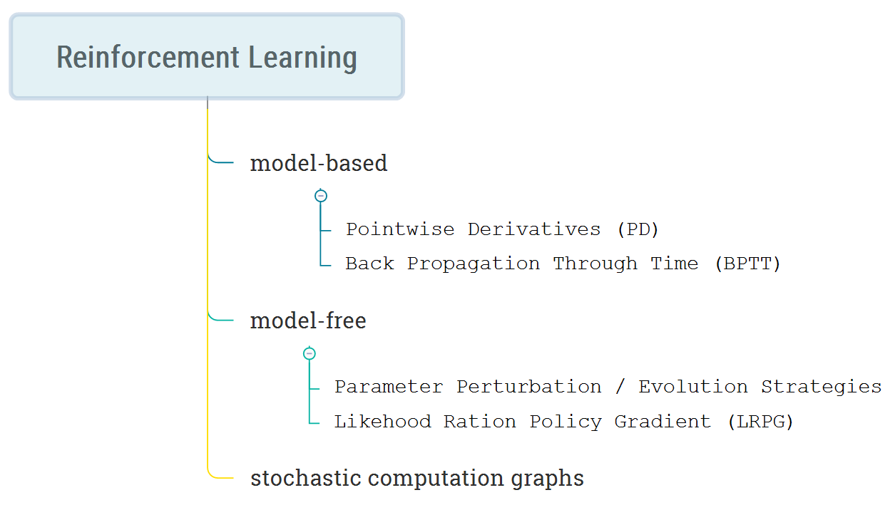

Reinforcement Learning Summer School (RLSS 2017)
Posted on Fri 13 October 2017 in misc
Hi!
I was rejected from DLSS/RLSS this year, but I decided not to be stressed about it, watch all the lectures and make the summary of them. I understand, that a summer school is not only about the lectures, but I don't have more. Going through the lectures and writing up will still be useful for me. It might also be useful for some of you. Let's start!
Sometimes, I tried to write my impression about the lectures or the related thoughts. Sometimes, the notes are the copypaste from the slides since I find this useful and it is nice to have all the stuff in one place.
The sections go in their natural order as in the schedule. You can find the slides here and the videos here.
If you see anything wrong or misunderstood, please, email me or find me on twitter.
Reinforcement Learning: basic concepts, Joelle Pineau¶
The best introduction to RL I have seen so far. Heavily recommended. Even if you already know some stuff, it will be useful for you to have a more or less whole picture of the basics.
In a short introduction, Joelle Pineau mentions the recent applications of RL found in RLDM 2017 submissions:
- robotics
- video games
- conversational systems
- medical intervention (x_X)
- algorithm improvement
- improvisational theater
- autonomous driving
- prosthetic arm control
- financial trading
- query completion
As you can see, the list is really large. And this is only after looking through half of the accepted papers.
The lecture proceeds with the question "When should I apply RL to my problem". The answer is the combination of the following prerequisites:
- your data comes in the form of trajectories (forget about the i.i.d. assumption);
- your system needs some kind of intervention;
- you need feedback in order to understand if you are doing well or not
- your problem is the one requiring both learning and planning
The lecturer mentions, that RL is somehow similar to Supervised Learning, but not completely. There are some challenges, both practical and technical:
- need some environment to operate in (one of the reasons for slow progress of RL in the past)
- you need to learn and plan at the same time using correlated samples
- your data distribution changes along with your learning procedure (the actions you take bring an agent to different states, and it makes the learning harder)
Then, Joelle gives the formal representation of an RL problem as a Markov Decision Process (MDP), defined as a tuple $\langle S,A,T(s,a,s'), R(s,a), \mu(s) \rangle$, where $S$ is the set of states, $A$ is the set of actions, $T(s,a,s')$ is the transition function returning the distribution over the next states $s'$ given the current state $s$ and the action taken $a$.
M in MDP stands for 'Markov', i.e. the process holds the Markov assumption: the future is independent of the past given the future. What does it mean? Our next state depends only on the current one, we do not need to know the whole history of states in order to predict the future. And the definition of the state according to Joelle is the following. A state is a sufficient amount of information about the world in order to predict the future. Sometimes in the real life, the assumption does not hold, that's true. But RL still uses it in order to reduce the complexity.
What is the goal of RL? We want to maximize the reward we get for our interaction with the environment. We can have two options here, either the task at hand is episodic (e.g. a game episode ends when you win or lose) or continuous (e.g. balancing).
Usually, the future reward flow is discounted by the coefficient $\gamma \in [0,1)$ (usually close to 1. $\gamma$ helps to trade off the balance between preferences in the immediate reward and the future reward. It is often said, that we discount the reward flow due to psychological reasons: humans prefer the immediate reward to the future reward. But, as Joelle mentions, it is much more mathematically convenient to use the discounting.
We now go to one of the most important definitions in RL -- policy function. Policy $\pi$ is a function, that returns an action given the state: $\pi(s,a) = p(a_t = a | s_t = s)$. And to solve an RL problem is to find a policy which maximizes the expected future reward flow: $argmax_{\pi} E_{\pi} [r_0 + r_1 + ... + r_T | s_0]$.
The value function of a state is an expected return of a policy starting from this particular state: $V_{\pi}(s) = E_{\pi} [r_t + r_{t+1} + ... + r_T | s_t = s]$. I don't get why, but all the definitions are given without the discounting. Maybe it does not matter here since when we take expectations later, we will be able to keep the gammas outside of the expectations, but I'm not sure. At Sutton & Barto's book, all the definitions and derivations are given for the discounted return.
In order not to mess all the terms and definitions, the lecturer gives the following slide:
- Reward is a one-step numerical feedback
- Return is the sum of rewards of the agent's trajectory
- Value is the expected sum of rewards over the agent's trajectory
- Utility is the numerical function representing preferences (in RL return $\equiv$ utility)
Ok, let's go to the policy evaluation. What is the value of a policy? It is just the expected immediate reward plus the expected future reward: $V_{\pi}(s) = E_{\pi}[r_t + r_{t+1} + ... + r_T | s_t = s] = E_{\pi}[r_t] + E_{\pi}[r_{t+1} + ... + r_{T} | s_t = s]$.
Let's rewrite the expectations now:
$V_{\pi}(s) = \sum_{a \in A}\pi(s,a)R(s,a) + E_{\pi}[r_{t+1} + ... + r_T | s_t = s]$
$V_{\pi}(s) = \sum_{a \in A}\pi(s,a)R(s,a) + \sum_{a \in A}\pi(s,a)\sum_{s' \in S}T(s,a,s')E_{\pi}[r_{t+1} + ... + r_T | s_{t+1} = s']$
And, looking at the definition of value function, we can see, that the the last expecation on the right hand side is just the value function of the state $s'$:
$V_{\pi}(s) = \sum_{a \in A}\pi(s,a)R(s,a) + \sum_{a \in A}\pi(s,a)\sum_{s' \in S}T(s,a,s')V_{\pi}(s')$
From here we can see, that this is a dynamic programming algorithm.
The lecturer uses the formulas with discounting now:
$V_{\pi}(s) = \sum_{a \in A}\pi(s,a)[R(s,a) + \gamma \sum_{s' \in S}T(s,a,s')V_{\pi}(s')]$
We also have to write the equation for the state-action value function $Q$ -- the function, returning the value of a state given that we take the particular action first and then follow the policy $\pi$:
$Q_{\pi}(s,a) = R(s,a) + \gamma \sum_{s' \in S}\big[T(s,a,s')\sum_{a' \in A}[\pi(s',a')Q_{\pi}(s',a')]\big]$
The last two formulas are the two forms of Bellman's equation.
We can rewrite the first one in the matrix form $V_{\pi} = R_{\pi} + \gamma T_{\pi}V_{\pi}$. It has the unique solution $V_{\pi} = (I - \gamma T_{\pi})^{-1}R_{\pi}$.
Let's now assume, that we have the fixed policy, how can we evaluate it? Let's somehow initialize the value function $V_{\pi}$ (with zeroes, for instance). On each iteration, we update the value function for each state:
$V_{k+1}(s) \leftarrow (R(s,\pi(s)) + \gamma \sum_{s' \in S}T(s,\pi(s), s')V_k(s')$, where $k$ is the index of the iteration.
We repeat it until the value function does not update anymore or the number of updates is no more than some threshold. There is the derivation of convergence in the slides (slide #31), but I will not write it here. I will just say, that it uses the fact, that $\gamma < 0$ to show, that the norm between the current approximation and the true value function contracts to zero.
We move from the fixed policy to finding the best (optimal) policy. The optimal value function is the highers return we can get from the state: $V^{*}(s) = max_{\pi}V_{\pi}(s)$. A policy, that achieves $V^{*}$ is called an optimal policy $\pi^*$. For each MDP there is a unique optimal value function. BUT the optimal policy is not necessarily unique.
Having a solution to an MDP means having either the optimal value function $V^*$ or an optimal policy $\pi^*$. We are saying that since if we have one of them, we can derive the other.
We have already looked at the policy evaluation algorithm for a fixed policy. But how to find the best policy? There are two related algorithms: policy iteration and value iteration.
Policy iteration goes as follows:
- initialize a policy somehow, random is also possible
Repeat
- Compute $V_{\pi}$ using Policy Evaluation algorithm
- Compute $\pi'$ that is greedy with respect to $V_{\pi}$
terminate when $\pi = \pi'$
A the value iteration:
- initialize the value function $V_0(s)$
- each iteration do the update $V_{k+1}(s) = max_{a \in A}(R(s,a) + \gamma \sum_{s' \in S}T(s,a,s')V_k(s'))$
- stop when the value function changes for a step is below some threshold
The complexities of the algorithms are the following ($S$ is the state space size, $A$ is the action space size):
- policy evaluation: $O(s)^3$
- policy iteration: $O(S^3 + S^2A)$ per iteration
- value iteration: $O(S^2A)$ per iteration
There is an example in the slides, but I will not put it here, but it's important to go through it if you think, you're confused about all the said above.
We can see from the complexities, that the algorithms get less and less feasible as our state-action space scales, however, we can try not to update all the states in value iteration, but only the important ones. Moreover, we can do the asynchronous updates, generating trajectories through the MDP and update the states only when they appear on a trajectory. In policy iteration, we are not forced to do one policy update after each policy evaluation. We can combine the updates and evaluations in any combination we find appropriate.
For those, who do not want to read the slides and watch the lectures anymore, but want to do the hardcore research, Joelle has the 'challenges' slide. I will also put them in a list:
- Designing the problem domain
- state representation
- action choice
- cost/reward signal
- acquiring data for training
- exploration/exploitation
- high cost actions
- time-delayed cost/reward signal
- function approximation
- validation/confidence measures
The lecture proceeds with describing on-line learning, which can be of two types, according to the lecturer:
- Monte-Carlo estimate, when we use the empirical return $U(s_t)$ as a target estimate for the actual value function: $V(s_t) = V(s_t) + \alpha(U(s_t) - V(s_t)$
- Temporal-Difference (TD) learning: $V(s_t) = V(s_t) + \alpha [r_{t+1} + \gamma V(s_{t+1} - V(s_t)] \forall t = 0,1,2,...$
As Joelle mentions, online learning is highly unstable, and a lot of recent RL research focused on improving the stability of the online learning algorithms.
Up to now, the lecture assumed, we are in a tabular setup when the value function and the policy can be represented as a large table. But in the real world, this approach will never work since the problems are much harder. We need to use the function approximations. Linear functions have been used for a long time. Recently, using neural nets as function approximators has become very popular, and we can use all the Deep Learning progress within RL, e.g. memory augmented models [1].
The lecture continues with describing the on-policy/off-policy dichotomy in RL. As we mentioned earlier, each policy change leads to data distribution change, so, when we evaluate several policies within the same batch, we need a large batch of data and a policy which adequately covers all (s,a) combinations. One of the solutions to the problem is to use importance sampling attaching different weights do data collected from different policies.
Exploration/exploitation dilemma goes next. You've definitely heard about it. When you have some policy, you might follow it and get your deserved return or you can try something new to achieve, possibly, more. Though researchers have been trying to solve the problem for a long time, it is still far from being solved.
In the end, Joelle mentions the two approaches to RL: model-based and model-free. The first tries to learn the model of the environment first and do the planning later. The second, that is more successful recently, is trying to learn a policy directly using the data from the environment. As for me, I find model-based approach very cool, but it is harder to learn. It has not been so hot recently, but the research is going on and, I hope, we will see great results in the near future.
There was also an interesting question from the audience about choosing the discounting coefficient $\gamma$. Joelle says that before she thought, that choosing the gamma is the problem of one who chooses the domain and creates the environment. But the community moves further and further to the fact, that $\gamma$ is a hyperparameter and, maybe, we should be more aggressive at the beginning of the training when our estimations are too noisy. There were no literature pointers in the lecture, but I wrote an email, and Joelle sent me the link [2].
The lecture is over, if you want to know more, either continue to read or find more awesome resources here. As for me, I want to add, that the lecture is great not only because of summarizing the basics of RL, but also giving some intuitions which help to understand the concepts better.
Policy Search for RL, Pieter Abbeel¶
Okay, let's move to Policy Gradient methods with Peter Abbeel.
Policy $\pi$ is mapping from states to actions: $\pi(\cdot;\theta): \mathbb{S} \rightarrow \mathbb{A}$, where $\theta$ parametrises the policy. And RL problem is to find a policy which maximises the total expected return $\max_{\theta}\mathbb{E}\sum_{t=0}^{H}{R(s_t)|\pi_{\theta}}$ $\pi$ is often stochastic. Reward might be sparce in time, hence, the problem is not that easy.
Policy search methods are the one which optimise the policy directly. Why policy optimisation then?
- sometimes policy is easier to represent than, let's say, $Q$ function
- Value function does not directly tell us what to do (not nesessarily true if we have a greedy policy with respect to $V$)
- learning $Q$ is hard for continuous/high-dimensional action spaces (how solve $argmax_u{Q_{\theta}(s,u)}$
Below you can see a classiication of these methods.

Model based approach¶
We start from the model-based approach. The MDP for the setting is on the picture.

Okay, what is the setting here? $r_t = R(s_t), u_t = \pi_{\theta}(s_t), s_{t+1}=f(s_t, u_t)$, where $u_t$ is named after 'upravlenie', the word for 'control' in Russian. And the assumptions is that the transition function $f$ is know, deterministic and differentiable, reward $r$ is know, deterministic and differentiable, policy $\pi$ is (known???), deterministic and differentiable.
The goal, again, is to maximise the total utility (don't like abusing the notation by taking capital $U$ for utility and $u_t$ for policy, but I live it as it is in the lecture):
$\max_{\theta}{U(\theta)} = \max_{\theta}\mathbb{E}[\sum_{t=0}^{H}{r_t}|\pi_0]$
Let's think about the MDP above as a computational graph, let's just back propagate gradients through this (BPTT).
$\frac{\partial U}{\partial \theta_i} = \sum_{t=0}^{H}\frac{\partial R}{\partial s}(s_t)\frac{\partial s_t}{\partial \theta_i}$
$\frac{\partial s_t}{\partial \theta_i} = \frac{\partial f}{\partial s}(s_{t-1}, u_{t-1})\frac{\partial u_{t-1}}{\partial \theta_i}+\frac{\partial f}{\partial u}(s_{t-1}, u_{t-1})\frac{\partial u_{t-1}}{\partial \theta_i}$
$\frac{\partial u_t}{\partial \theta_i} = \frac{\partial \pi_{\theta}}{\partial \theta_i}(s_t, \theta) + \frac{\partial \pi_{\theta}}{\partial s}(s_t, \theta)\frac{\partial s_t}{\partial \theta_i}$
Feed this to your favourite automatic differentiation package, and you are set. AGI!
What happens if the environment is stochastic, i.e. $s_{t+1} = f(s_{t+1}, u_t) + \omega_t$? Not much, just consider noise constant for the rollout in question. That's true, that we need to sample more rollouts to reduce the variance, but nothing changes apart from that.
More generally, we apply reparametrisation trick to the dynamics of an MDP, i.e. going from $s_{t+1} = f(s_{t+1}, u_t) + \omega_t$ to $s_{t+1} = f(s_{t+1}, u_t, w_t)$, where the latter function is not stochastic anymore. Computational graph will just have additional inputs $\omega_0, \omega_1, ..., \omega_k$ We can apply exactly the same trick to both reward function and policy.
The whole idea in pseudocode looks like this:
for iter = 1,2...
for rollout r = 1,2...
sample s0, w0, w1, ..., v0, v1..., z0, z1... # w_i is dynamics noise, v_i is policy noise, z_i is reward noise
execute rollout
compute gradients via BPTT
average gradients
take gradient step
In real world, we do not have access to noise, but we can learn it from rollouts (model-based RL).
It's very hard to make all of these work, as Peter says. Stochastic Value Gradients (SVG) [3] of different flavours (SVG($\infty$), SVG(1), SVG(0)->(D)DPG [4,5]) is one of the success stories. DDPG uses DQN features as replay memory and using target net to improve stability: $\hat{Q}_t = r_t + \gamma Q_{\phi'}(s_{t+1}, \pi_{\theta'}(s_{t+1}))$, where $Q_{\phi'}$ is the Polyak-averaged target function (averaged weights along several weight updates).
Model free approach¶
What are the assumptions here? It turns out that there is less assumptions in comparison to the previous section. There are no assumptions for the transition function as well as for the reward. Policy $\pi$ is (known??? and)stochastic.
Finite Difference method¶
$\frac{\partial U}{\partial \theta_i} = \frac{U(\theta+\epsilon_je_j) + U(\theta-\epsilon_je_j)}{2\epsilon}$, where $e_j$ is the one hot encoding of the parameter vector index $\begin{align} e_j &= \begin{bmatrix} 0 \\ 0 \\ 1 \\ \vdots \\ 0 \end{bmatrix} \end{align}$, where (1 is for $j$-th entry)
Estimate the gradient via finite differences. Be careful! The noise for positive and negative perturbations should be the same!
Cross-Entropy Method¶
Optimise the same objective (expected sum of rewards along the rollout), but consider $U$ to be a black box and ignore all the other information other than U collected during an episode.
This is an evolutionary algorithm which works as follows:
disr_params = np.zeros(population_size)
for iter i = 1, 2, ...
curr_utility = np.zeros(population_size)
for population member e = 1, 2, ...
sample parameters from the distribution over params
execute rollouts under current policy
distr_params[e] = sampled_params
curr_utility[e] = curr_rollout_return
# update the mean of the distribution over parameters
# where the sum is taken for top p% of the population
# logprob is for the distribution wi
new_mean = argmax(sum(logprob(params[e])))
It's interesting, that given how simple the method is, it works embarassingly (according to Peter) well. Unfortunately, sample efficiency is not that great and the method struggles when problem dimensionality is too high.
You can find a list of related approaches with references below:
- Reward Weighted Regression (RWR) [6]
- Policy Improvement with Path Integrals ($PI^2$) [7]
- Covariance Matrix Adaptation Evolutionary Strategy (CMA-ES) [8]
- PoWER [9]
If you have a lot of compute and do not care about sample efficiency (e.g. in cheap simulation), the methods are great.
It turns out, that since we can easy to parallelise them, they will be the fastest in terms of the wall time Salimans, Ho, Sutskever, 2017
Likelihood Ratio Policy Gradients¶
Usually, when somebody is talking about PG, they are talking about Likelihood Ratio PG. We modify the notation a bit to reduce clutter. $\tau$ is the trajectory which includes all the state/actions for one particular rollout: $s_0, u_0, ..., s_h, u_h$. $R(\tau) = \sum_{t=0}^{H}R(s_t, u_t)$. The goal again is to maximise the objective $U(\theta) = \mathbb{E}[\sum_{t=0}^{H}R(s_t, u_t); \pi_{\theta}] = \sum_{\tau}P(\tau;\theta)R(\tau)$ with respect to $\theta$.
Let's derive the gradient of the objective using the famous log trick. $\nabla_{\theta}U(\theta) = \nabla_{\theta}\sum_{\tau}P(\tau; \theta)R(\tau) = \sum_{\tau}\nabla_{\theta}P(\tau; \theta)R(\tau) = \sum_{\tau}\frac{P(\tau;\theta)}{P(\tau;\theta)}\nabla_{\theta}P(\tau; \theta)R(\tau) = \sum_{\tau}{P(\tau;\theta)}\frac{\nabla_{\theta}P(\tau;\theta)}{P(\tau; \theta)}R(\tau) \sum_{\tau}{P(\tau;\theta)}\nabla_{\theta}\log{P(\tau;\theta)}R(\tau)$. So, from one expectation, we got to another expectation of the log: $\nabla_{\theta}U(\theta) = \nabla_{\theta}\mathbb{E}_{\tau}[R(\tau)] = \mathbb{E}_{\tau}[\nabla_{\theta}\log{P(\tau; \theta)}R(\tau)]$. Gradient of the expectation equals to the expectation of the gradient of the log. Why is it useful? It's useful because we can empirically evaluate our expectation by just taking average of the executed rollouts: $\nabla_{\theta}(U(\theta)) \approx \frac{1}{m}\sum_{i=1}^{m}\nabla_{\theta}\log{P(\tau^{(i)},\theta)R(\tau^{(i)})}$.
There is another way of obtaining the same result via importance sampling. We sample from $\theta_{old}$ and reweight the samples using the ratio of the new and the old policies:
$U(\theta) \mathbb{E}_{\tau \sim \theta_{old}}[\frac{P(\tau|\theta)}{P(\tau|\theta_{old})}R(\tau)]$
$\nabla_{\theta} U(\theta) |_{\theta = \theta_{old}} = \mathbb{E}_{\tau \sim \theta_{old}}[\frac{\nabla_{\theta} P(\tau|\theta) |_{\theta_{old}}}{P(\tau|\theta_{old})}R(\tau)] = \mathbb{E}_{\tau \sim \theta_{old}}[\nabla_{\theta} \log{P(\tau|\theta)}|_{\theta_{old}}R(\tau)]$
Another great thing is that all of these works even when our reward function $R$ is discontinuous and/or unknown.
The intuition behind LRPG methods is that they try to increase the probability of paths with positive $R$, and decrease the probability of paths with negative $R$. They do not try to change the paths, this is important (in contrast to path derivatives, which try to perturb the trajectories rather than shifting probability mass).
The derivations seems too magical to be true =), but this is not the only magic. Let's get rid of the dynamics in our gradient computation:
$\nabla_{\theta}\log{P(\tau^{(i)}; \theta)} = \nabla_{\theta}\log{[\prod_{t=0}^H{P(s_{t+1}^{(i)}| s_t^{(i)},u_t^{(i)})\pi_{\theta}(u_t^{(i)}|s_t^{(i)})}]} = \nabla_{\theta}\sum_{t=0}^{H}{\log{P(s_{t+1}^{(i)}, u_t^{(i)})}} + \sum_{t=0}^{H}\log{\pi_{\theta}(u_t^{(i)}|s_t^{(i)})} = \nabla_{\theta}\sum_{t=0}^{H}\log{\pi_{\theta}(u_t^{(i)}|s_t^{(i)})} = \sum_{t=0}^{H}\nabla_{\theta}\log{\pi_{\theta}(u_t^{(i)}|s_t^{(i)})}$
Magic again! No transition model required!!!
As a result of all above, $\hat{g} = \frac{1}{m}\sum_{i=1}^{m}\nabla_{\theta}\log{P(\tau^{(i)}}; \theta)R(\tau^{(i)})$ is an unbiase estimate of the true gradient, i.e. $\mathbb{E}[\hat{g}] = \nabla_{\theta}U(\theta)$.
A caveat here is that when $R > 0$, our method will try to increase the probabilities of all paths.
But we want to increase the probabilities only the best ones.
Let's introduce the baseline, which, intuitively, will try to tell us whether we're doing better than average or not.
Baseline is something we deduce from our trajectory return when estimating the gradient: $\hat{g} = \frac{1}{m}\sum_{i=1}^{m}\nabla_{\theta}\log{P(\tau^{(i)}}; \theta)(R(\tau^{(i)}) - b))$. One can show, that introducing a (some particular) baselines does not bias our gradient estimate. When we're doing better than average, PG increase probability of these trajectories, and vice versa. One of the most obvious choices for a baseline is $b = \mathbb{E}[R(\tau)] \approx \frac{1}{m}\sum_{i=1}^{m}R(\tau^{(i)})$.
Another important moment about vanilla PG is that every action influence all the reward, though it should not. Let's make an action influence only future rewards by changing the summation indices:
$\hat{g} = \frac{1}{m}\sum_{i=1}^{m}\sum_{t=0}^{H-1}\nabla_{\theta}\log{\pi_{\theta}}(u_t^{(i)}|s_t^{(i)})(\sum_{k=t}^{H-1}{R(s_k^{(i)}, u_k^{(i)}) - b(s_k^{(i)})})$
What's a good choice for $b$ in this setting? Expected return from this time step $\mathbb{E}[r_t + r_{t+1} + ... + r_{H-1}]$ looks like a good option.
You can find the whole 'vanilla' PG pseudocode below
Initialize policy parameter theta, baseline b
for iteration 1,2,... do
Collect a set of trajectories by executing the current policy
At each timestep in each trajectory compute
return = sum(discount(rewards))
advantage = return - b(s_t)
Re-fit the baseline, by minimising square norm of b(s+t) - R_t summed over all trajs and time steps
Update the policy, using a policy gradient estimate g_hat which is the sum of grad(logprob(a_t|s_t)*advantage)
There are some important things which can make PG work better. One of these things is a step size. Step size is important in supervised learning, but it's even more important in RL since policy generate data we will train on the next iteration. And if the data is somehow wrong, we will never recover out of this unlucky situation.
We can just do a simple line search $-$ trying different step sizes in the direction of the gradient and taking the best one. True, that we use only first order approximation here. Can we do better? Let's use a trust region idea $-$ a region, where we trust that our first order approximation. After that, we have to find the best point within the trust region:
$\max_{\delta\theta}\hat{g}^T\delta\theta, s.t. KL(P(\tau; \theta)||P(\tau; \theta+\delta\theta)) < \epsilon$
Again, if we evaluate the KL, the environment dynamics magically cancels out again and $KL(P(\tau; \theta)||P(\tau; \theta+\delta\theta)) \approx \frac{1}{M}\sum_{s \text{ in rollouts under } \theta}{KL(\pi_{\theta}(u|s)||\pi_{\theta + \delta\theta}(u|s))}$
We can look at the second-order approximation of to KL and get $KL(\pi_{\theta}(u|s)||\pi_{\theta + \delta\theta}(u|s)) = \delta\theta^T F_{\theta}\delta\theta, $ where $F_{\theta}$ is Fisher Information Matrix.
If $\theta$ is high dimensional, it's super hard to build/invert the Fisher matrix, TRPO PAPER provides ous with machinery to compute second-order approximation more efficiently.
We can improve even better when bringing value function into play.
$\hat{g} = \frac{1}{m}\sum_{i=1}^{m}\sum_{t=0}^{H-1}\nabla_{\theta}\log{\pi_{\theta}}(u_t^{(i)}|s_t^{(i)})(\sum_{k=t}^{H-1}{R(s_k^{(i)}, u_k^{(i)}) - V^{\pi}(s_k^{(i)})})$
We need to learn $V^{\pi}$ somehow, but RL has tools to do that. Moreover $R(s_k^{(i)}, u_k^{(i)})$ looks suspiciously similar to estimate of $Q^{\pi}(s,u) = \mathbb{E}[r_0 + r_1 + ... | s_0 = s, a_0 = a]$
The variance here can be reduced by discounting and function approximation (e.g. using different TD(k)). A3C paper and GAE are two great examples of the approach described above.
When I finished watching the lecture for the first time, I didn't really like it. It looked pretty cluttered to me, and it was hard to tell the things apart. But when I finished watching it for the 3rd time I find it quite logical, very broad and deep (not because of DL) at the same time (apart from the fact, that I did not get the slide about stochastic computational graphs at all).
I also like the 'Current Frontiers' slide, where Peter Abbeel puts the latest research on the subject. I won't copypaste it here, but if you want, you can find it on slides 134-135 in the presentation.
In addition, Peter provides links to RL courses as well:
- CS294-112 Deep Reinforcement Learning (UC Berkeley) by Sergey Levine, John Schulman, Chelsea Finn
- COMPM050/COMPGI13 Reinforcement Learning (UCL) by David Silver
- Deep RL Bootcamp, Berkeley, CA (August 26-27)
TD Learning, Richard Sutton¶
This is not only a lecture on temporal-difference (TD) methods but a commencement speech for those who are entering the field. In the beginning, Rich is pondering about what's the ultimate solution to AI. He says that the method should scale as the amount of compute grows. And prediction learning is something that does scale. What is prediction learning? It's unsupervised supervised learning: we can get a target (e.g. just by waiting) however we do not need a human label.
Let's get back to TD learning, learning a prediction from another, later, learned prediction. TD is the difference between two predictions. Otherwise, TD learning is just supervised learning.
Why do you need TD learning? When your problem is a multi-step prediction problem $\rightarrow$ something which supervised learning is not really great in, e.g. stock price prediction.
Why not treat the problem above as step-by-step prediction? Rich says it's a trap and mentions POMDPs, Bayesians, control theory and compression enthusiasts x_X. Long-term predictions are hard and small errors are amplified. Computational costs are growing exponentially and it makes no sense the further it goes. We can't wait until the end when the target is known. Moreover, sometimes we don't even know the target.
I put 'new RL notation' below. If you've already seen the second edition of the RL textbook, it's not new for you. Capital letters are random variables; lowercase letters are instances of these variables: $S_0, A_0, R_1, S_1$ are the state, action and reward respectively. $R_1$ means the reward for the transition from state $S_0$ to state $S_1$.
$G_t$ is the discounted return $G_t := R_{t+1} + \gamma R_{t+2} + ... = R_{t+1} + G_{t+1}$.
$v_{\pi}$ is the state-value function $v_{\pi}(s) := \mathbb{E}_{\pi}[G_t | S_t=s] = \mathbb{E}_{\pi}[R_{t+1} + \gamma v_{\pi}(S_{t+1}) | S_t=s]$. Note, that this is not just the value, but the value of some policy $\pi$.
Finally, TD error is the difference $R_{t+1} + \gamma V(S_{t+1}) - V(S_{t})$
Okay, next Rich goes to the explanation of Monte Carlo (Supervised learning as he puts it):
$V(S_t) \leftarrow V(S_t + \alpha[G_t - V(S_t)])$
Opposed to MC, the siplest TD variant takes only the first reward and uses the state-value estimation for the update:
$V(S_t) \leftarrow V(S_t + \alpha[R_{t+1} + \gamma V(S_{t+1}) - V(S_t)])$
Dynamic Programming takes the expectation here:
$V(S_{t}) \leftarrow \mathbb{E}_{\pi}[R_{t+1} + \gamma V(S_{t+1})]$
TD is cool because it bootstraps and samples. Computationally, TD is also cool since it can be fully incremental and allows you to learn as you go without waiting for the final outcome.
Then goes the random walk example and another didactic example when MC fails (minimising the mean-square error) and TD wins (doing certainty-equivalence estimate): MC methods are better on the history, but have a higher error on future data.
The relationship between all the methods can be seen at the "Unified View" picture:

All right, we go from the state-value function $V(S)$ to the action-value function $Q(S_t,A_t)$.
- For SARSA it's $Q(S_t,A_t) \leftarrow Q(S_t,A_t) + \alpha [R_{t+1} + \gamma Q(S_{t+1}, A_{t+1}) - Q(S_t, A_t)]$.
- For Q-learning it's $Q(S_t,A_t) \leftarrow Q(S_t,A_t) + \alpha [R_{t+1} + \gamma \max_a Q(S_{t+1}, a) - Q(S_t, A_t)]$.
- And, finally, for the expected SARSA: $Q(S_t,A_t) \leftarrow Q(S_t,A_t) + \alpha [R_{t+1} + \gamma \mathbb{E} Q(S_{t+1}, A_{t+1} | S_{t+1}) - Q(S_t, A_t)]$.
At the end of the lecture, prof. Sutton highlights the topics that might be of researchers interest:
- off-policy prediction
- non-linear function approximation
- convergence theory for TD control theory
- TD + DL?
- Predicting something other than reward, e.g. Horde, Unreal, options
This is the most unusual lecture on RL I've seen so far. Prof. Sutton looks so excited about the stuff he's doing so that I envy him sometimes =) There is a lot of personal opinion going on, but in general it's a great and interesting lecture.
Deep Reinforcement Learning, Hado van Hasselt¶
Hado starts from the big picture. AI revolution is coming: you do not need to come up with the solution to the problem. Let AI discover it for you. Reinforcement Learning is here to save us.
RL deals with problems that involve making decisions and/or making predictions about the future. Hado splits approaches to an RL problem into three types: learning a policy $\pi(s) = a$, learning a value, e.g. $Q(s,a) = \mathbb{E}[R_1 + ... | S_t = s, A_t = a]$ and, finally, learning a model $m(s,a) = \mathbb{E}[S_{t+1}| S_t = s, A_t = a]$. No matter what approach you choose, you need to represent and learn these functions. Deep learning to the rescue!
The lecture proceeds with the explanation of Q-learning, an off-policy algorithm.
The Belman optimality equation for the action value function looks like that: $Q^*(s,a) = \mathbb{E}[R_{t+1} + \gamma \max_b Q^*(s_{t+1}, b) | S_t = s, A_t = a]$
As a TD, we can put it as $Q_{t+1}(S_t, A_t) = Q_t(S_t, A_t) + \alpha (R_{t+1} + \gamma \max_a Q_t(S_{t+1}, a) - Q(S_t, A_t))$ The optimal policy in Q-learning is the policy greedy with respect to Q: $\pi^*(s) = \mathop{argmax}_a Q(s, a)$
DQN paper [21], combines Neural Networks, Q-learning [19], memory replay [20], adds an additional target network and gets amazing results on the Atari 2600 benchmark.
A DQN weight update is not that different from the previous formulas:
$\Delta w = \alpha [R_{t+1} + \gamma \max_a Q(S_{t+1}, a; w^{-}) - Q(S_t, A_t; w)] \nabla_w Q(S_t, A_t; w)$
The target network stabilises training since changing the value of one action influences the values for other actions and similar states as well.
There is a whole ton of work building on top of DQN:
- Double DQN [12] ($\Delta w = \alpha [R_{t+1} + \gamma Q(S_{t+1}, \mathop{argmax}_a Q(S_{t+1}, a; w); w^{-}) - Q(S_t, A_t; w)] \nabla_w Q(S_t, A_t; w)$ helps to fight overestimation via decorrelating selection and evaluation)
- Prioritised replay [13] (sample the transitions based on the absolute Bellman error $|r+\gamma \max_{a'}Q(s', a', w^{-} - Q(s, a; \theta))|$)
- Dueling Networks [14] $Q(s,a) = V(s) + A(s,a) - \frac{1}{\mathcal{A}}\sum_{a=1}^{\mathcal{A}}{A(s,a)}$
- Asynchronous updates [10]
- Adaptive normalisation of values [15]
- Better exploration [16,17,18]
- ...
One guy asked about error bars in RL papers. Hado answered, that's it's too much compute to do x_X. Later the guy asks whether they take the best seed or not. My hero.
Hado gives quite good practical advice that might sound simple, but that's still very powerful:
- Be aware of the properties of your learning algorithms
- Track and analyse statistics
- If you understand what the problem is, a solution is sometimes very simple
The lecture is great for lots of DQN insights. Must watch if you want to build upon. The slide deck has also information on policy gradient methods and a bit on AlphaGo, but due to the lack of time, it was not covered in the lecture with an exception of a short slide on the A3C paper.
Deep Control, Nando de Freitas¶
No slides |Video
This lecture has no slide deck provided, so, there will be no formulas and mostly a general description of what's going on.
Let's say you have all these fancy algorithms introduced in the previous talks. What can you do with them in real life? Nando de Freitas tries to answer these questions.
His first postulate is the following. If you want to successfully operate in the environment around you, you need to understand how it works. You need to know the physics of the environment. That's true, it is hard to learn physics. A good physics simulator is extremely hard to build. However, physics allows to transfer. Physics is something that works anywhere in the same manner.
When people learn, they continuously experience the flow of rewards of all kind. Rewards are everywhere. How can you come up with all the rewards for our agents? One possible way to convey the reward in an implicit manner is to imitate a demonstrator.
Nando will give some pointers later on, but he decides to go with the second option first: using the language (by language here he means a formal language). The language should be grounded, i.e. an agent should understand what words mean with respect to the real world events. An additional perk of having a language in the model lies in the interpretability. We can look into the network's internals as Nando claims and understand how the agent perceives the scene.
Programmable Agents [23] is an example of the approach discussed above. The authors build an RL agent capable of executing declarative programs specified in a formal language. OR(HAND, AND(RED, CUBE)) is an example of such a program. One of the coolest points about the paper is that it learns disentangled representations of the object properties in the world. Right now if we take an RL agent trained in one environment and change the background colour, this is more likely to screw everything.
Although it's still the beginning, this paper tries to tackle this flaw and succeeds up to some point. Programmable agents are okay with interpolating between known properties, but if you add a completely new property, they struggle to generalise. If an agent saw red sphere and blue cube, it will be okay with blue sphere even if it hasn't seen it. But if the agent hasn't seen a property before, he will be in trouble.
The next interesting moment: the more a human learns, the faster it develops. Maybe we should look at transfer/solving multiple problems more? [27] is one of the papers in this approach combining it with hierarchies. Nando gives an example of quite an unusual approach to learning multiple things at a time [22]: learn more when solving your problem, don't ignore additional (maybe artificial) reward information when you learn. An UNREAL agent takes an additional effort to learn how to maximise the pixel change in the input, predict the reward etc:

Imitation is the final topic Nando de Freitas reviews. Why do we want to imitate? It allows us to do exploration in a smart way. Behaviour cloning is good unless you shift from the data distribution which ends up with disastrous consequences. Papers like [25, 26] are aimed to mitigate these consequences. [28] combines imitation with multitask learning idea Nando mentioned earlier: "the more you try to learn, the better you are".
Third Person Imitation Learning [24] is the final paper Nando mentions. The main idea is that in the real world you always imitate someone you cannot get access to. You look at your teacher, but when you perform the task, you do not control the teacher, you control the body. And your experience is slightly different. The authors look at the problem of imitating from different perspective (different observation angle).
For some reason, for me, the talk was extremely hard to follow. I don't get the general message apart from Nando de Freitas bringing our attention to learning physics, using language in RL, imitation learning and transfer. Maybe that was the idea: to have a look at the most interesting topics which are under heavy research right now. For those who got interested, the talk has a lot of references as well. Jump on the bandwagon!
Theory of RL, Csaba Szepesvári¶
Why and what¶
Why should we care about theory? Here, by theory, we mean models + predictions (i.e. convergence properties). Theory helps us to design algorithms, understand their behaviour, quantify knowledge/uncertainty, and identify new/refine old challenges. Theory also might help you to explain why something doesn't work for you.
Next Csaba introduces the learning theory framework with all the notation needed. Actually, it's not that heavily used throughout the lecture, but it's interesting to put it anyway so that we are aware of the setting we are in.
We are in the realm of binary classification. $X \in \mathcal{R}^d$ is the input space, $Y \in {0,1}$ is the output space. We have distributions $\mathcal{P} \subseteq \mathcal{M}(X \times Y)$, where $\mathcal{M}(S)$ means all the distributions over the set $S$. We generate iid samples $(X_1, Y_1) ... (X_n, Y_n)$, where $(X_i, Y_i) \sim P \in \mathcal{P}$.
The next ingredient in learning theory are predictors (hypotheses) $h: X \rightarrow Y$ for the data we haven't seen. We also need to define a loss $l: \mathcal{H} \times (X \times Y) \rightarrow [0, \infty]$ Finally, a learning algorithm maps samples to hypotheses $(X \times Y)^n \rightarrow \mathcal{H}$.
Risk of the predictor $R(h)$ shows how bad our predictor is: $R(h, P) = p(h(X) \neq Y), where (X,Y) \sim P$.
We can split the questions learning theory deals with into two main groups: a priori ("how well our algorithm performs on new data?") and a posteriori ("how well is the algorithm doing on some data").
The fundamental theorem of statistical learning theory (SLT) says the following: in binary classification, to match the loss of best hypothesis in class $\mathcal{H}$ up to accuracy $\epsilon$, one needs $\widetilde{\theta}(\mathop{VC}(\mathcal{H})/\epsilon^2)$ observations. VC dimension is not defined here. Personally, I like how it's explained in Learning from Data course from Caltech.
The computational complexity of learning linear classifiers is the next important result of SLT presented in the talk: Unless $\mathop{NP}={RP}$, linear classifiers (hyperplanes!) cannot be learned in polynomial-time. $\mathop{RP}$ is randomised-time polynomial.
Batch learning¶
We are in the MDP framework. Somebody is collecting the data for us (to make it closer to the supervised learning scenario): $(X_t, A_t, Y_t, R_t), t \in [1, N]$, the samples are iid. We need to find an $\epsilon$-optimal policy in $\Pi$. If horizon $H=0$, we just want to maximise the immediate reward. Batch RL is at least as hard as cost-sensitive classification (CSS).
Let's have a look at one particular instance of an RL problem. The horizon $H=2$. The state space $S = \{0,1\}$. The policy $\pi$ is a function of a threshold $\theta$: $\pi(x, \theta) = \mathop{sgn}(x-\theta), \theta \in [0,1]$. The MDP is the following:
- if you start at 0, your state is 0
- if you start at 1, your state is 1
- if you start at anywhere but at 0,1 or 0.5, you transition to 0.5
- if you at 0.5 and you take 1, you end up at 1, if you take 0, you end at 0
- the initial states are generated from the uniform distribution
There might be two MDPs with different rewards:
- 0 state is a good state (+1) and 1 is a bad state(-1)
- another way round
The catch is that 0.5 is of utmost importance for the solution, but we don't encounter 0.5 in the $s \rightarrow s'$ transitions where s=0.5 (horizon is 2). Hence, the sample complexity of batch RL is infinite!
When you have a simulator¶
When you have a simulator, things are much easier. Or are they?
Transitions and reward might be either deterministic or stochastic.
Given a (huge) MDP we either need to compute a good policy from $\Pi$ or a good action at a given state of a good policy from $\Pi$. It's not that easy to answer which one is easier, but ... spoilers ... the second one is.
Csaba introduces Fitted Value Iteration next, where for each training epoch we try to solve a regression problem to approximate the value function. The target variables are fixed for an epoch. Now we have another problem: instability [29]: sometimes it work, sometimes it doesn't. The point of the theory is to find out why it doesn't work sometimes and what is important to make it work?
Why the hell DQN worked?
- The initial distribution of states is not fixed, but slowly changes (experience replay).
- 'right' bias using CNNs
- better fit of data and better bias both explained by theory (???)
No simulator, 'learning' in the real world (have a reward signal)¶
Why do we care about online RL? An alternative is to build a model of the environment, but that's pretty hard and poor models might lead to poor policy learning.
Exploration is a hard and important problem in RL. Csaba gives an example when random exploration is horrible: you can either do nothing (you will move backwards in this case), or take an action which will either move you forward with the probability of 0.5 or will put you in the same place. The reward is in the leftmost position.
Bandits are an RL problem with a single state. Exploration is studied often in the bandit setting. To know more about bandits and exploration (UCB is the best), go to http://banditalgs.com.
For MDPs, $R_T = \Omega(\sqrt{DSAT})$, where $R_T$ is the total regret and $D$ is the diameter: maximum of best travel times between pairs of states. Why do we, again, care? All this stuff that shows up in the complexity might affect your performance. You need to start making assumptions to make it work.
I expected this to be a horrifying lecture full of derivations and notation. But it turned out to be a really fun and interesting high-level talk with motivations for using theory in research. Highly recommended.
Reinforcement Learning, Satinder Singh¶
This is a talk on continual learning, which implies:
- learning new skills (options)
- learning new knowledge (option-conditional) prediction
- reusing what you've learnt and combining the skills to learn more complicated stuff
- being motivated to explore even without an explicit task
- becoming more and more competent along the agent existence
With other words, we want our agent to behave like a child exploring the world [31].
Intrinsic reward is the reward we get for a surprise, an error in prediction of a salient event according to the option model. Any time you encounter a salient event, you create an option for it (a behaviour model and a prediction model) which you update during agent life. An agent learns new skills using a model-based approach (e.g. DYNA).
Fine, but where do rewards come from? Usually, in RL, we get the reward (also a problem if you apply RL in the real life though). In the continual learning, the question is even harder. Let's assume that there is an agent designer who has preferences, his implicit reward function. An agent also has a reward function hardcoded by the designer. In RL these both rewards are confounded. How can we design a reward so that when agent maximises its own reward, the designer's reward is maximised as well? We call this problem the 'optimal reward problem': $\mathop{argmax}_{R_i}\mathbb{E}_{env}[\mathbb{E}_{h}[U_o(h)]]$, where $h$ is the trajectory, $R_i$ is the agent's internal reward, $U_o$ is the designer utility of the trajectory (sum of the designer rewards $R_o$). The lecturer gives [32] and [33] as an example of approaching the problem.
As Nando de Freitas already mentioned in his lecture, Inverse RL is a smart way of getting the reward: infer the reward given the demonstrations. IRL tries to solve an ill-posed problem, since many reward functions might lead to the same optimal behaviour we have as demonstrations. At the same time, even if the reward is not identified, we can still mimic a good policy.
Can we infer the real reward function still in the lifelong learning scenario? A human has a very complicated implicit reward function $\theta_*$ such as not breaking the law, social norms etc. We can assume, that an agent has a reward $R_t$ for each of the task he has to execute. $<S,A, P_t, R_t + \theta_*, \gamma >$. The agent knows everything but $\theta_*$. Can we learn it from demonstrations?
There are two types of unidentifiabilities in IRL: representational (should be ignored) and experimental (can be dealt with). The former relates to behavioural equivalence when we might have completely different rewards which lead to exactly the same behaviour for all the environments/tasks.
The experimenter chooses an environment $E_t$ and a reward $R_t$. A human reveals $\pi_t^*$ optimal for $R_t + \theta_*$ in $E_t$. There is a theorem saying that if any task can be chosen, there is an algorithm that outputs $\theta$, such that $||\theta - \theta_*||_\infty \leq \epsilon$ after $O(\log{(1/\epsilon))}$ tasks.
Zero-shot task generalization by learning to compose subtasks [35] is the next work the author reviews. The main motivation for the approach is in combinatorial complexity of composite policies which require us to do several subtasks. It is much easier to learn subtasks that all combinations of them (like in disentangled representation motivation). Let's assume we're in a grid world and can give our agent instruction using natural language. Some instructions require repetition of the subtask. The problem is quite hard due to:
- generalisation to new subtasks
- deciding when to move on to the next instruction
- dealing with long-term instructions and random events.
- dealing with any number of subtasks
- delayed reward
The way [35] approaches the problem is the following. Multitask controller is responsible for executing a subtask given a subgoal and deciding whether the current subtask goal is achieved or not. Meta controller is responsible for defining a subgoal given the instructions:

Analogy-making objective makes an agent learned disentangled representations of tasks. Don't quite get it, but it looks like they compare the embedding of the subtasks given the properties and try to make similar subtasks embedding closer in the embedding space and vice versa. Each subtask requires a separate policy, and it is used as a teacher for the final policy to provide the action labels in the supervised learning setup. The authors combine an RL objective, analogy-making objective and a binary termination loss for training. Interestingly, the meta controller is updated only when it's time to change a sub-goal. There is no need to do it at any step.
Value Prediction Network [36], built on top of Predictron [37] is the last paper the lecturer covers in this talk. How does it relate to the continual learning problem? It's very hard to build a model with high dimensional observation space. How can we plan without predicting observations? We can predict an internal state of the model and use it for planning and value prediction:

This was a very interesting lecture, though a bit confusing one, mostly because of the notation. The notation used doesn't go in line with what I'm accustomed to, e.g. using $h$ instead of $\tau$ for trajectories or using Exp instead $\mathbb{E}$ for expectation. Still, it's a good talk and it's especially interesting to watch after Nando's lecture since they intersect at some points.
Safe RL, Philip Thomas¶
Disclaimer: we will not be talking about John Connor saving the world from terminators. We are in the same world of MDPs (this particular lecture focuses on episodic MDPs, i.e. ones when the episode ends).
What does Philip Thomas mean by safe RL here? We should be robust to partial observability. If we're not robust, we might lose customers, money, affect people in a bad way (e.g. suggest something that makes them sad in the case of the recommender system) etc. The things get worse if our models are in control of human limbs or take decisions regarding their health (controlling blood sugar level). So, we don't want our models to exhibit unexpected in the real-life situations.
An RL algorithm does not usually work right after you implement it. You need to tweak it, you need to find better input representations, you need to try a lot and spend a lot of compute unless you find something satisfactory.
An algorithm should guarantee that it will work on the first try with some degree of confidence (there is still a chance $\delta$, that it will be worse than the current policy). And this guarantee should not be contingent on tuning hyperparameters. It should also tell us if the task is impossible to solve with given guarantee and historical data $\mathcal{D}$.
There are some additional assumptions in this lecture, namely, we have access to the current policy (the one which we want to replace with an RL algorithm), the policy is often known and stochastic. Finally, we are in the batched setting.
There are others definitions of safety, e.g. [38]. Risk sensitivity is an important notion in the light of safety. What's our risk when we lose in a casino? What about taking decisions as a doctor? We might want to penalise variance, maximise value at risk (VaR) or conditional value at risk (CVaR). We might be interested in how our algorithm handle arbitrary off-polyciness [39] or avoids some dangerous states [40].
Three steps towards a safe algorithm:
- off-policy policy evaluation (we can't operate in an environment since we want an algorithm work from the beginning, we want to get an estimate of the objective on the historical data).
- high confidence off-policy policy evaluation (estimate the policy performance with guarantee probability $1-\delta$.
- safe policy improvement (take only data $\mathcal{D}$, probability $1-\delta$ and output the policy of 'No solution found'.
Importance Sampling (IS) comes to the scene.
History: $H = (S_1, A_1, R_1, ..., S_L, A_L, R_L)$.
Objective $J(\pi_e) = \mathop{E}[\sum_{t=1}^{L}{\gamma^tR_t|\pi_e]}]$
Importance-weighted return: $\hat{J}(\pi_e) = \frac{1}{n}\sum_{i=1}^n w_i \sum_{t=1}^L{\gamma^tR_t^i}$
We need to evaluate policy $\pi_e$. The data comes from another policy $\pi_b$. So, IS weights here are to reduce the probability of the events which happens often under $\pi_b$, but not on $\pi_e$ and vice versa. How do we compute these weights?
- $X$ is a random variable (r.v.) with PMF $p$. This is our data generated by $\pi_e$.
- $Y$ is an r.v. with PMF $q$ and the same range as $X$. This is our data generated by $\pi_e$.
- $f(X)$ is the return of X.
- We need to estimate $\mathop{E}[f(x)]$ given samples from $Y$.
- $P, Q,$ and $F$ are supports of $p, q, $ and $f$ respectively.
The importance sampling estimate of $\mathop{E_p}[f(x)]$ is $IS(Y) = \frac{p(Y)}{q(Y)}f(Y), $ where $Y$ is one sample. So, if something is more likely under our new policy, the weight is bigger than one and vice versa. $IS$ gives us an unbiased estimator of the return (given some assumptions).
The cool thing with using IS is that when we want to compute the weights $\frac{p(H|\pi_e)}{p(H|\pi_b)}$, the transition probabilities which come up cancel because they do not depend on the policy and are the same for both. We can weigh whole trajectories as well as each time step decisions.
The problem with IS is that the variance is unbounded. Can we sacrifice a bit of our unbiasedness to reduce the variance? It turns out we can. We can normalise our IS weights by a total sum of these weights. The more data we have, the closer we get to IS. The less data we have, the closer we are to Monte Carlo.
How do we do high confidence off-policy evaluation (HCOPE), when apart from the data and the policy we also get the confidence lower bound on the objective. Hoeffding's inequality to the rescue!
If $X_1, ..., X_n$ are i.i.d. and $X_i \in [0,b]$, then with probability less than 1-$\delta$: $\mathop{E}[X_i] \geq \frac{1}{n}\sum_{i=1}^n X_i - b \sqrt{\frac{ln(1/\delta)}{2n}}$
Let's plug our IS estimator in:
$\mathop{E}[X_i] \geq \frac{1}{n}\sum_{i=1}^n [w_i \sum_{t=1}^{L}{\gamma^t R_t^i}] - b \sqrt{\frac{ln(1/\delta)}{2n}}$
Unfortunately, Hoeffding's inequality gives us a very bad lower bound. The coefficient $b$ is the reason for that. What should we do? Use other concentration inequalities, such as Anderson&Massart or CUT (unfortunately, no references).
We can also use the $t$-test. Yes, it works in the Normal case, but the Central Limit theorem helps us here. Moreover, if rewards are non-negative then the $t$-test tends to be conservative.
Finally, let's talk about safe policy improvement (SPI). We just split the data into train/test dataset. Then, we use a batch RL algorithm on the training data to get the policy. Evaluate policy with HCOPE and if the lower bound is higher than the policy return, return our policy. Otherwise, we haven't found a solution.
This is the end of the lecture. As a conclusion, we have a couple of future research directions:
- make safe RL more computationally feasible;
- OPE
- Can we handle long horizon problems;
- Can we handle non-episodic problems;
- What if the behaviour policy is not known;
- What if the environment is non-stationary;
- How best to leverage prior knowledge like an estimate of the transition function;
- HCOPE
- Better concentration inequalitites;
- Safe Policy Improvement
- Better techniques for selecting the candidate policy;
- What's the best split between train/test data;
I really liked the lecture. It shows, that RL safety is not only about talking about terminators and red buttons designed to shut them down, as a lot of people might think. Apart from a curious perspective on RL safety, the lecture gives the best explanation of Importance Sampling I've ever encountered. Must see for those who always wanted to get the right intuition.
Applications of bandits and recommendation systems, Nicolas Le Roux¶
In this lecture, Nicolas Le Roux talks about the application of RL less common in the academic community online advertising. However, this is more than just that. You can consider the lecture to be an RL practitioner's guide in industry.
What is the mechanism which decides which ad to show when you visit your favourite website? Retargeting does the job. The website contacts an ad-exchange which, in turn, contacts the retargeter. Each competitor tells how much it bids and the highest bidder wins the right to display the ad. Everything is happening in real time. The winner is paying the second highest bid. The optimal strategy is to bid the expected gain: $\mathop{\mathbb{E}}[gain] = \text{price per click} * p(\text{click})$ The click probability is called CTR.
When we think about RL we think of multi-step episodes, in this talk, all the episodes have length one. The state is everything you know about the user, the amount we are willing to pay is the action.
How can we estimate the probability of a click? We have access to labelled data, where the information about the user is the input and click/no click is the label. The first thing that comes to mind, is to build a classifier. However, we can be smarter and use RL for that!
Why should we do that? Implicitly we assume that our loss function is a good proxy for the revenue and that the input distribution is the same for training and testing data. These assumptions are tricky and not always hold in the real world.
Consider the A/B testing: a two-arm bandit system. Split the population for some period of time and choose the system with the best average reward. It turns out, that RMSE is not that correlated with the return we can get and the lecturer shows that. People usually care about the optimum of the loss function. But it is often not the case. For instance, in this auction scenario, the competitors matter. Apart from the loss, we should ask ourselves: "How much we are gonna pay if we take the wrong decision?"
It is not that rosy regarding the input distribution as well. Our bidding policy influences the data we collect (smells like RL here =)). Moreover, we have the data only for the auctions we won, we don't know the CTR for all the others.
The lecturer points out that it's very easy to draw wrong conclusions from the data. He shows an example of the Simpson's paradox next. Let's say, we need to understand where we want to show a banner: on top or on the side? We split the data into high-value and low-value users. Surprisingly, the conclusions for the overall dataset and for the two groups separately are entirely the opposite.
What can we do to deal with confounding variables and not to face the issue above:
- add as many variables in the model (complicated)
- run online a/b tests (what if you're a small company?)
- exploration (model misspecification screws the things up and the authors has a demo for that)
- perform counterfactual analyses ("What would have happened if we had done something else?" Would it have been better or worse?")
Importance sampling allows us to evaluate Q:
$G(q) = \int_s \int_a p(s) q(a|s) r(a,s)da\,ds = \int_s \int_a p(s) \frac{q(a|s)}{p(a|s)} p(a|s) r(a,s)da\,ds \approx \frac{1}{N}\sum_i{\frac{q(a|s)}{p(a|s)}r_i}$
We may now optimise over Q. However, we get additional constraints with this, i.e. rolling out a new policy is expensive and we need to optimise with as fewer updates as possible?
What are the benefits of policy evaluation in comparison to the supervised learning approach? The former turns out to be a better predictor working with tangible quantities. Constraint optimisation becomes meaningful here.
In industry, it is very important to iterate and check your hypotheses fast and hassle-free (Can you make a build in one step?). Policy optimisation is not that different: optimisations are performed regularly and must be trouble-free and robust. Stochastic methods are rarely trouble-free (e.g. hyperparameter optimisation is tricky).
At the end of the lecture, Nicolas mentions some of the questions important for real-life applications, namely, how to reduce the inference time and how to combine the rewards of multiple forms (clicks, sales etc.)
To sum up:
- robustness and efficiency are critical
- pipeline efficiency included there
- improving the model is useless without a good reward (evaluation, I would say)
- RL deals with tangible quantities (e.g. dollars instead of log-loss)
Quite an interesting lecture, especially if you never had industry experience. Apart from that, it's also curious to observe a use-case when RL is applied in practice, which is still rare. Surprisingly for me, Nicolas says that evaluation is underrated in industry. That's especially curious in the light of the latest evaluation work in RL. That means, that there is huge room and need for improvement here. This lecture intersects a bit with the previous one on safe RL when we discussed off-policy evaluation.
Cooperative Visual Dialogue with Deep RL, Dhruv Batra & Devi Parikh¶
This lecture is the not as much on RL as on Visual Dialogues. However it is quite interesting in terms of reframing a problem so that it begin to look like an RL problem. In the first part Devi Parikh introduces us to the domain. In the second part Dhruv Batra shows how we can use RL knowledge to advance in the Visual Dialogue problem.
It all starts as captioning. A model tries to describe the content of a picture. Next, a human asks question, and this is Visual Question Answering (VQA). The power mode is when we want to have a dialog a sequence of VQAs.
Why do we need to describe images with words?
Lot's of applications:
- assistance for visually-impaired users
- helping visually-impaired analysis (e.g. going through surveillance videos)
- natural language instructions for robots
VQA is hard since it requires a lot of things from you:
- recognising even small objects in the scene
- count them
- have some background knowledge (e.g. meat is not a vegetarian meal)
- reason out of context (moustache of banana)
Language priors are extremely strong. Often model success is not AGI, but a coincidence because of an imbalanced dataset. For instance, a giraffe is often standing next to trees. And a model just needs to recognise a giraffe and complete the second part automatically ('standing next to a tree') 'Do you see...' or 'Is there...' questions are also prone to error in the evaluation protocol because of the same error.
As an illustration of this fact, balancing the VQA dataset [41] leads to 7-8% performance drop for VQA models. However, after retraining on the balanced one, the models regain 1-2% in accuracy.
In order to go deeper, to the Visual Dialog, we need a dataset. We have one [42], collected via Amazon Turk.
The Visual Dialog evaluation protocol is the following:
- an image $I$
- history $(Q_1,A_1),...(Q_{t-1},A_{t-1})$
- follow up question $Q_t$
- 100 answer options (50 answers from NN questions, 30 popular, 20 random)
- Rank the list of 100 options
- Accuracy/Error mean-rank-of-GT, mean reciprocal rank
Open directions: Improve dialog agents via self-talk (smells like RL already); Domain adaptation via self-talk (smells like RL already); Dialog rollouts, future prediction, theory of mind;
The first part ends here, and we are slowly approaching the RL part.
What are existing problems in Visual Dialogue:
- conversation has no goal
- agent not in control of the dialogue (e.g. doesnt get to see its errors during training)
- Learning equivalent utterances (there are many equivalent questions/answers, but we do not learn them)
Let's play a game. There are two bots: Q-bot and A-bot. The former asks question about some picture, the latter answers them. They have to cooperate (the reward is shared), so that after 10 rounds of conversations Q-bot guesses what picture it is. They models have no shared parameters so that there is no leakage (Q-bot must not see the pic!)
The actions for Q-bot is $q_t$ (a question) and image regression $\hat{y} \in \mathbb{R}^{4096}$. A-bot's actions are just answers $a_t$.
Q-bot's state $s_t^Q$ is $[c, q1, a1, ... q_{t-1}, a_{t-1}]$. A-bot's state $s_t^A$ is $[I, c, q1, a1, ....q_{t-1}, a_{t-1}, q_t]$, $c$ are the captions, as far as I get. The captions are generated by A-bot.
The reward is design to answer the question "Did Q-bot's question helped or not?": $r_t(s_t^Q, (q_t, a_t, y_t)) = l(\hat{y}_{t-1}, y^{gt}) - l(\hat{y}_{t}, y^{gt})$, where $l$ is the distance between image embeddings.
Vanilla REINFORCE does the trick and gets quite a jump in performance in comparison to just supervised learning. Voil.
At the end of the talk, the lecturer quickly covers some of the going on research and provides a list of relevant papers [43, 44, 45, 46, 47].
I first thought that the lecture was not from RLSS but DLSS since there is very little on RL here. Hovewer, it turned out pretty interesting in terms of domain and ability to reframe a problem so that you can apply a new approach to an old challenge.
Outro¶
That's it! We've made it till the end! I've learnt a lot when writing this post. I hope it was useful for you too. Have fun and see you soon!
References¶
[1] Khan, Arbaaz, Clark Zhang, Nikolay Atanasov, Konstantinos Karydis, Vijay Kumar, and Daniel D. Lee. "Memory Augmented Control Networks." arXiv preprint arXiv:1709.05706 (2017), link.
[2] Jiang, Nan, Alex Kulesza, Satinder Singh, and Richard Lewis. "The dependence of effective planning horizon on model accuracy." In Proceedings of the 2015 International Conference on Autonomous Agents and Multiagent Systems, pp. 1181-1189. International Foundation for Autonomous Agents and Multiagent Systems, 2015, link.
[3] Heess, Nicolas, Gregory Wayne, David Silver, Tim Lillicrap, Tom Erez, and Yuval Tassa. "Learning continuous control policies by stochastic value gradients." In Advances in Neural Information Processing Systems, pp. 2944-2952. 2015, link.
[4] Silver, David, Guy Lever, Nicolas Heess, Thomas Degris, Daan Wierstra, and Martin Riedmiller. "Deterministic policy gradient algorithms." In ICML. 2014, link.
[5] Lillicrap, Timothy P., Jonathan J. Hunt, Alexander Pritzel, Nicolas Heess, Tom Erez, Yuval Tassa, David Silver, and Daan Wierstra. "Continuous control with deep reinforcement learning." arXiv preprint arXiv:1509.02971 (2015)., link
[6] Hachiya, Hirotaka, Jan Peters, and Masashi Sugiyama. "Reward-weighted regression with sample reuse for direct policy search in reinforcement learning." Neural Computation 23, no. 11 (2011): 2798-2832, link.
[7] Theodorou, Evangelos, Jonas Buchli, and Stefan Schaal. "A generalized path integral control approach to reinforcement learning." Journal of Machine Learning Research 11, no. Nov (2010): 3137-3181, link.
[8] Hansen, Nikolaus, Sibylle D. Mller, and Petros Koumoutsakos. "Reducing the time complexity of the derandomized evolution strategy with covariance matrix adaptation (CMA-ES)." Evolutionary computation 11, no. 1 (2003): 1-18, link.
[9] Kober, Jens, and Jan R. Peters. "Policy search for motor primitives in robotics." In Advances in neural information processing systems, pp. 849-856. 2009, link.
[10] Mnih, Volodymyr, Adria Puigdomenech Badia, Mehdi Mirza, Alex Graves, Timothy Lillicrap, Tim Harley, David Silver, and Koray Kavukcuoglu. "Asynchronous methods for deep reinforcement learning." In International Conference on Machine Learning, pp. 1928-1937. 2016, link.
[11] Schulman, John, Philipp Moritz, Sergey Levine, Michael Jordan, and Pieter Abbeel. "High-dimensional continuous control using generalized advantage estimation." arXiv preprint arXiv:1506.02438 (2015), link.
[12] Van Hasselt, Hado, Arthur Guez, and David Silver. "Deep Reinforcement Learning with Double Q-Learning." In AAAI, vol. 16, pp. 2094-2100. 2016, link.
[13] Schaul, Tom, John Quan, Ioannis Antonoglou, and David Silver. "Prioritized experience replay." arXiv preprint arXiv:1511.05952 (2015), link.
[14] Wang, Ziyu, Tom Schaul, Matteo Hessel, Hado Van Hasselt, Marc Lanctot, and Nando De Freitas. "Dueling network architectures for deep reinforcement learning." arXiv preprint arXiv:1511.06581 (2015), link.
[15] van Hasselt, Hado P., Arthur Guez, Matteo Hessel, Volodymyr Mnih, and David Silver. "Learning values across many orders of magnitude." In Advances in Neural Information Processing Systems, pp. 4287-4295. 2016, link.
[16] Ostrovski, Georg, Marc G. Bellemare, Aaron van den Oord, and Rmi Munos. "Count-based exploration with neural density models." arXiv preprint arXiv:1703.01310 (2017), link.
[17] Fortunato, Meire, Mohammad Gheshlaghi Azar, Bilal Piot, Jacob Menick, Ian Osband, Alex Graves, Vlad Mnih et al. "Noisy networks for exploration." arXiv preprint arXiv:1706.10295 (2017), link.
[18] Bellemare, Marc, Sriram Srinivasan, Georg Ostrovski, Tom Schaul, David Saxton, and Remi Munos. "Unifying count-based exploration and intrinsic motivation." In Advances in Neural Information Processing Systems, pp. 1471-1479. 2016, link.
[19] Watkins, Christopher JCH, and Peter Dayan. "Q-learning." Machine learning 8, no. 3-4 (1992): 279-292, link.
[20] Lin, Long-Ji. "Self-improving reactive agents based on reinforcement learning, planning and teaching." Machine learning 8, no. 3-4 (1992): 293-321, link.
[21] Mnih, Volodymyr, Koray Kavukcuoglu, David Silver, Andrei A. Rusu, Joel Veness, Marc G. Bellemare, Alex Graves et al. "Human-level control through deep reinforcement learning." Nature 518, no. 7540 (2015): 529, link.
[22] Jaderberg, Max, Volodymyr Mnih, Wojciech Marian Czarnecki, Tom Schaul, Joel Z. Leibo, David Silver, and Koray Kavukcuoglu. "Reinforcement learning with unsupervised auxiliary tasks." arXiv preprint arXiv:1611.05397 (2016), link.
[23] Denil, Misha, Sergio Gmez Colmenarejo, Serkan Cabi, David Saxton, and Nando de Freitas. "Programmable agents." arXiv preprint arXiv:1706.06383 (2017), link.
[24] Stadie, Bradly C., Pieter Abbeel, and Ilya Sutskever. "Third-person imitation learning." arXiv preprint arXiv:1703.01703 (2017), link.
[25] Ho, Jonathan, and Stefano Ermon. "Generative adversarial imitation learning." In Advances in Neural Information Processing Systems, pp. 4565-4573. 2016., link
[26] Wang, Ziyu, Josh S. Merel, Scott E. Reed, Nando de Freitas, Gregory Wayne, and Nicolas Heess. "Robust imitation of diverse behaviors." In Advances in Neural Information Processing Systems, pp. 5326-5335. 2017, link.
[27] Andreas, Jacob, Dan Klein, and Sergey Levine. "Modular multitask reinforcement learning with policy sketches." arXiv preprint arXiv:1611.01796 (2016), link.
[28] Duan, Yan, Marcin Andrychowicz, Bradly Stadie, OpenAI Jonathan Ho, Jonas Schneider, Ilya Sutskever, Pieter Abbeel, and Wojciech Zaremba. "One-shot imitation learning." In Advances in neural information processing systems, pp. 1087-1098. 2017, link.
[29] Boyan, Justin A., and Andrew W. Moore. "Generalization in reinforcement learning: Safely approximating the value function." In Advances in neural information processing systems, pp. 369-376. 1995, link.
[30] Jaksch, Thomas, Ronald Ortner, and Peter Auer. "Near-optimal regret bounds for reinforcement learning." Journal of Machine Learning Research 11, no. Apr (2010): 1563-1600, link.
[31] Chentanez, Nuttapong, Andrew G. Barto, and Satinder P. Singh. "Intrinsically motivated reinforcement learning." In Advances in neural information processing systems, pp. 1281-1288. 2005, link.
[32] Sorg, Jonathan, Richard L. Lewis, and Satinder P. Singh. "Reward design via online gradient ascent." In Advances in Neural Information Processing Systems, pp. 2190-2198. 2010, link.
[33] Guo, Xiaoxiao, Satinder Singh, Richard Lewis, and Honglak Lee. "Deep learning for reward design to improve monte carlo tree search in atari games." arXiv preprint arXiv:1604.07095 (2016), link.
[34] Amin, Kareem, Nan Jiang, and Satinder Singh. "Repeated Inverse Reinforcement Learning." In Advances in Neural Information Processing Systems, pp. 1813-1822. 2017, link.
[35] Oh, Junhyuk, Satinder Singh, Honglak Lee, and Pushmeet Kohli. "Zero-shot task generalization with multi-task deep reinforcement learning." arXiv preprint arXiv:1706.05064 (2017), link.
[36] Oh, Junhyuk, Satinder Singh, and Honglak Lee. "Value prediction network." In Advances in Neural Information Processing Systems, pp. 6120-6130. 2017, link.
[37] Silver, David, Hado van Hasselt, Matteo Hessel, Tom Schaul, Arthur Guez, Tim Harley, Gabriel Dulac-Arnold et al. "The predictron: End-to-end learning and planning." arXiv preprint arXiv:1612.08810 (2016), link.
[38] Garca, Javier, and Fernando Fernndez. "A comprehensive survey on safe reinforcement learning." Journal of Machine Learning Research 16, no. 1 (2015): 1437-1480, link.
[39] Munos, Rmi, Tom Stepleton, Anna Harutyunyan, and Marc Bellemare. "Safe and efficient off-policy reinforcement learning." In Advances in Neural Information Processing Systems, pp. 1054-1062. 2016, link.
[40] Akametalu, Anayo K., Jaime F. Fisac, Jeremy H. Gillula, Shahab Kaynama, Melanie N. Zeilinger, and Claire J. Tomlin. "Reachability-based safe learning with Gaussian processes." In Decision and Control (CDC), 2014 IEEE 53rd Annual Conference on, pp. 1424-1431. IEEE, 2014, link.
[41] Antol, Stanislaw, Aishwarya Agrawal, Jiasen Lu, Margaret Mitchell, Dhruv Batra, C. Lawrence Zitnick, and Devi Parikh. "Vqa: Visual question answering." In Proceedings of the IEEE international conference on computer vision, pp. 2425-2433. 2015, link.
[42] Das, Abhishek, Satwik Kottur, Khushi Gupta, Avi Singh, Deshraj Yadav, Jos MF Moura, Devi Parikh, and Dhruv Batra. "Visual dialog." In Proceedings of the IEEE Conference on Computer Vision and Pattern Recognition, vol. 2. 2017, link.
[43] Foerster, Jakob, Ioannis Alexandros Assael, Nando de Freitas, and Shimon Whiteson. "Learning to communicate with deep multi-agent reinforcement learning." In Advances in Neural Information Processing Systems, pp. 2137-2145. 2016, link.
[44] Sukhbaatar, Sainbayar, and Rob Fergus. "Learning multiagent communication with backpropagation." In Advances in Neural Information Processing Systems, pp. 2244-2252. 2016, link.
[45] Mordatch, Igor, and Pieter Abbeel. "Emergence of grounded compositional language in multi-agent populations." arXiv preprint arXiv:1703.04908 (2017), link.
[46] Lazaridou, Angeliki, Alexander Peysakhovich, and Marco Baroni. "Multi-agent cooperation and the emergence of (natural) language." arXiv preprint arXiv:1612.07182 (2016), link.
[47] Jorge, Emilio, Mikael Kgebck, Fredrik D. Johansson, and Emil Gustavsson. "Learning to play guess who? and inventing a grounded language as a consequence." arXiv preprint arXiv:1611.03218 (2016), link.
[48] Havrylov, Serhii, and Ivan Titov. "Emergence of language with multi-agent games: learning to communicate with sequences of symbols." In Advances in Neural Information Processing Systems, pp. 2149-2159. 2017, link.
[49] Andreas, Jacob, Anca Dragan, and Dan Klein. "Translating neuralese." arXiv preprint arXiv:1704.06960 (2017), link.